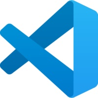

Software de Versionamento
- Sistema que tem por objetivo realizar o controle de versões de um código ou documento.
- É possivel gerenciar as versões de um código ou documeto realizadas por um desenvolvedor ou equipe de desenvolvedores.
Controle de versões
Repositório local: na máquina, porém sincronizado a um servidor.
Repositório remoto: software que armazena que controla as versões, realizando uma sincronização entre o remoto e o local.
Tipos de sofware de controle de versão.
- Centralizado
- Possui um repositório central em um servidor com controle de versões. Dependente do servidor.
- Exemplo: Software Subversion.
- Disribuído
- Possui um repositório local com controle de versões, sendo necessárias atualizações no ropositório central. Independente do servidor.
- Exemplo: Software Mercurial, Git.
Git
É um software livre de versionamento desenvolvido por Linus Torvalds em 2005.
Cada diretório de trabalho do Git é um repositório com um histórico completo e habilidade total de acompanhamento das revisões, não dependente de acesso a uma rede ou a um servidor central.
GitHub
Plataforma de hospedagem de código-fonte e arquivos com controle de versão.
Ambiente de programação.

Git

GitHub

Desktop.GitHub

Visual Studio Code
Iniciando a utilização dos Git's